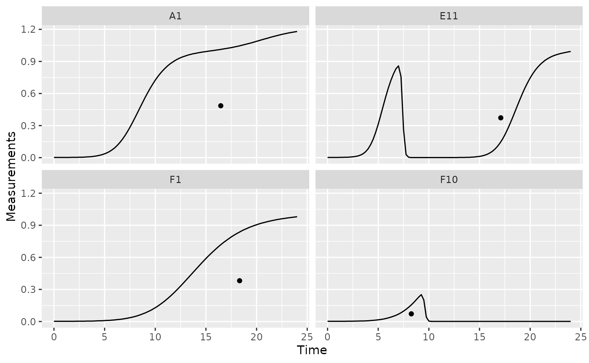
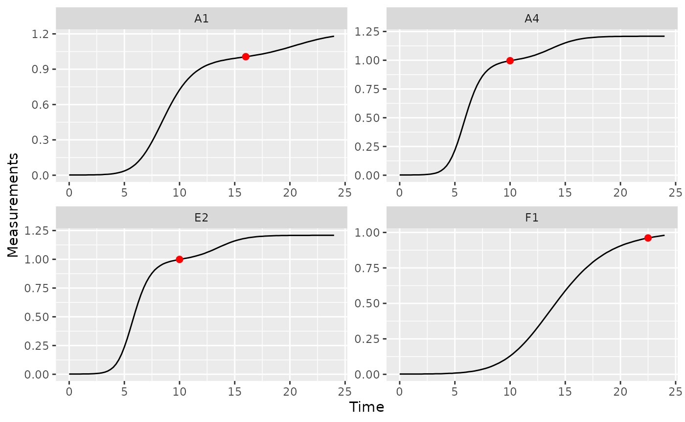

Where are we so far?
- Introduction:
vignette("gc01_gcplyr") - Importing and transforming data:
vignette("gc02_import_transform") - Incorporating design information:
vignette("gc03_incorporate_designs") - Pre-processing and plotting your data:
vignette("gc04_preprocess_plot") - Processing your data:
vignette("gc05_process") -
Analyzing your data:
vignette("gc06_analyze") - Dealing with noise:
vignette("gc07_noise") - Statistics, merging other data, and other resources:
vignette("gc08_conclusion") - Working with multiple plates:
vignette("gc09_multiple_plates")
So far, we’ve imported and transformed our measures, combined them with our design information, pre-processed, processed, and plotted our data. Now we’re going to analyze our data by summarizing our growth curves into a number of metrics.
If you haven’t already, load the necessary packages.
library(gcplyr)
#> ##
#> ## gcplyr (Version 1.7.0, Build Date: 2023-11-03)
#> ## See http://github.com/mikeblazanin/gcplyr for additional documentation
#> ## Please cite software as:
#> ## Blazanin, Michael. 2023. gcplyr: an R package for microbial growth
#> ## curve data analysis. bioRxiv doi: 10.1101/2023.04.30.538883
#> ##
library(dplyr)
#>
#> Attaching package: 'dplyr'
#> The following objects are masked from 'package:stats':
#>
#> filter, lag
#> The following objects are masked from 'package:base':
#>
#> intersect, setdiff, setequal, union
library(ggplot2)
# This code was previously explained
# Here we're re-running it so it's available for us to work with
example_tidydata <- trans_wide_to_tidy(example_widedata_noiseless,
id_cols = "Time")
example_design <- make_design(
pattern_split = ",", nrows = 8, ncols = 12,
"Bacteria_strain" = make_designpattern(
values = paste("Strain", 1:48),
rows = 1:8, cols = 1:6, pattern = 1:48, byrow = TRUE),
"Bacteria_strain" = make_designpattern(
values = paste("Strain", 1:48),
rows = 1:8, cols = 7:12, pattern = 1:48, byrow = TRUE),
"Phage" = make_designpattern(
values = c("No Phage"), rows = 1:8, cols = 1:6, pattern = "1"),
"Phage" = make_designpattern(
values = c("Phage Added"), rows = 1:8, cols = 7:12, pattern = "1"))
ex_dat_mrg <- merge_dfs(example_tidydata, example_design)
#> Joining with `by = join_by(Well)`
ex_dat_mrg$Well <-
factor(ex_dat_mrg$Well,
levels = paste(rep(LETTERS[1:8], each = 12), 1:12, sep = ""))
ex_dat_mrg$Time <- ex_dat_mrg$Time/3600 #Convert time to hours
ex_dat_mrg <-
mutate(group_by(ex_dat_mrg, Well, Bacteria_strain, Phage),
deriv = calc_deriv(x = Time, y = Measurements),
deriv_percap5 = calc_deriv(x = Time, y = Measurements,
percapita = TRUE, blank = 0,
window_width_n = 5, trans_y = "log"),
doub_time = doubling_time(y = deriv_percap5))
sample_wells <- c("A1", "F1", "F10", "E11")
# Drop unneeded columns (optional, but makes things cleaner)
ex_dat_mrg <- dplyr::select(ex_dat_mrg,
Time, Well, Measurements, Bacteria_strain, Phage,
deriv, deriv_percap5)Analyzing data with summarize
Ultimately, analyzing growth curves requires summarizing the entire time series of data by some metric or metrics. gcplyr makes it easy to calculate a number of metrics of interest, which I’ve grouped below into categories:
Growth with antagonists (e.g. phages)
- the peak bacterial density before a decline (e.g. from phage predation)
- the extinction time (e.g. from phage predation)
The following sections show how you can use gcplyr
functions to calculate these metrics.
But first, we need to familiarize ourselves with one more
dplyr function: summarize. Why? Because the
upcoming gcplyr analysis functions must be used
within dplyr::summarize. If you’re already
familiar with dplyr’s summarize, feel free to
skip the primer in the next section. If you’re not familiar
yet, don’t worry! Continue to the next section, where I provide a primer
that will teach you all you need to know on using summarize
with gcplyr functions.
Another brief primer on dplyr: summarize
Here we’re going to focus on the summarize function from
dplyr, which must be used with the
group_by function we covered in our first primer: A brief primer on dplyr.
summarize carries out user-specified calculations on
each group in a grouped data.frame independently,
producing a new data.frame where each group is now just a
single row.
For growth curves, this means we will:
-
group_byour data so that every well is a group -
summarizeeach well into one or several metrics
As before, to use group_by we simply pass the
data.frame to be grouped, and the names of the columns we
want to group by. Since summarize will drop columns that
the data aren’t grouped by and that aren’t summarized, we will typically
want to list all of our design columns for group_by, along
with the plate name and well. Again, make sure you’re not
grouping by Time, Measurements, or anything else that varies
within a well, since if you do dplyr will group
timepoints within a well separately.
Then, we run summarize. summarize works
much like mutate did, where we specify:
- the name of the variable we want results saved to
- the function that calculates the summarized results
Just like mutate, if we want additional summary metrics,
we simply add them to the summarize. However, unlike
mutate, summarize functions return just a
single value for each group.
As you’ll see throughout the rest of this article, we’ll be using
group_by and summarize to calculate our
metrics of interest. If you want to learn more, dplyr has
extensive documentation and examples of its own online, but this primer
and the coming example should be sufficient to analyze data with
gcplyr.
Plotting summarized metrics
Once you’ve calculated your summarized metrics, you should plot them on the original data to make sure everything matches what you expect. We can plot summarized values right on top of our original data:
- density or rate metrics can be plotted as a horizontal line with
geom_hline - time metrics can be plotted as a vertical line with
geom_vline - pairs of metrics that correspond to both density/rate and time can
be plotted as a point with
geom_point
You’ll see examples of these plots throughout this article.
Initial density
If you want to identify the initial density of your bacteria, it will
often be sufficient to use min_gc (this works just like
R’s built-in min, but with better default
settings for growth curve analyses with summarize).
We can also save the time when this minimum occurs using the
which_min_gc function. which_min_gc returns
the index of the minimum value, so then we can get the
Time value at that index and save it to a column titled
min_time. (which_min_gc and
extr_val work just like R’s built-in
which.min and [, but with better default
settings for growth curve analyses with summarize)
ex_dat_mrg_sum <-
summarize(group_by(ex_dat_mrg, Bacteria_strain, Phage, Well),
min_dens = min_gc(Measurements, na.rm = TRUE),
min_time = extr_val(Time, which_min_gc(Measurements)))
#> `summarise()` has grouped output by 'Bacteria_strain', 'Phage'. You can
#> override using the `.groups` argument.
head(ex_dat_mrg_sum)
#> # A tibble: 6 × 5
#> # Groups: Bacteria_strain, Phage [6]
#> Bacteria_strain Phage Well min_dens min_time
#> <chr> <chr> <fct> <dbl> <dbl>
#> 1 Strain 1 No Phage A1 0.002 0
#> 2 Strain 1 Phage Added A7 0.001 9.75
#> 3 Strain 10 No Phage B4 0.002 0
#> 4 Strain 10 Phage Added B10 0.001 11
#> 5 Strain 11 No Phage B5 0.002 0
#> 6 Strain 11 Phage Added B11 0.001 6
ggplot(data = dplyr::filter(ex_dat_mrg, Well %in% sample_wells),
aes(x = Time, y = Measurements)) +
geom_line() +
facet_wrap(~Well) +
geom_point(data = dplyr::filter(ex_dat_mrg_sum, Well %in% sample_wells),
aes(x = min_time, y = min_dens),
size = 2, color = "red")In some cases (e.g. growing with phages), bacteria may later drop to a lower density than they started in the growth curve. In this case, we want the first local minima of the Measurements data, rather than the global minima:
ex_dat_mrg_sum <-
summarize(group_by(ex_dat_mrg, Bacteria_strain, Phage, Well),
min_dens = first_minima(y = Measurements, x = Time, return = "y"),
min_time = first_minima(y = Measurements, x = Time, return = "x"))
#> `summarise()` has grouped output by 'Bacteria_strain', 'Phage'. You can
#> override using the `.groups` argument.
head(ex_dat_mrg_sum)
#> # A tibble: 6 × 5
#> # Groups: Bacteria_strain, Phage [6]
#> Bacteria_strain Phage Well min_dens min_time
#> <chr> <chr> <fct> <dbl> <dbl>
#> 1 Strain 1 No Phage A1 0.002 0
#> 2 Strain 1 Phage Added A7 0.002 0
#> 3 Strain 10 No Phage B4 0.002 0
#> 4 Strain 10 Phage Added B10 0.002 0
#> 5 Strain 11 No Phage B5 0.002 0
#> 6 Strain 11 Phage Added B11 0.002 0Note that you can tune the sensitivity of first_minima
to different heights and widths of peaks and valleys using the
window_width, window_width_n, and
window_height arguments. You should check that
first_minima is working with your data by plotting it,
although the default sensitivity works much of the time.
Lag time
Bacteria often have a period of time before they reach their maximum
growth rate. If you would like to quantify this lag time, you can use
the lag_time function. lag_time needs the x
and y values, as well as the (per-capita) derivative. It will find the
maximum derivative, then project the tangent line with that slope back
until it crosses the starting density.
Below, I calculate lag time. So that you can see a visualization of
what this tangent-line calculation does, I also calculate the
max_percap, max_percap_time,
max_percap_dens, and min_dens, but you don’t
have to do that.
ex_dat_mrg_sum <-
summarize(group_by(ex_dat_mrg, Bacteria_strain, Phage, Well),
lag_time = lag_time(y = Measurements, x = Time,
deriv = deriv_percap5),
max_percap = max_gc(deriv_percap5),
max_percap_time = Time[which_max_gc(deriv_percap5)],
max_percap_dens = Measurements[which_max_gc(deriv_percap5)],
min_dens = min_gc(Measurements))
#> `summarise()` has grouped output by 'Bacteria_strain', 'Phage'. You can
#> override using the `.groups` argument.
head(ex_dat_mrg_sum)
#> # A tibble: 6 × 8
#> # Groups: Bacteria_strain, Phage [6]
#> Bacteria_strain Phage Well lag_time max_percap max_percap_time
#> <chr> <chr> <fct> <dbl> <dbl> <dbl>
#> 1 Strain 1 No Phage A1 2.18 1.03 4.25
#> 2 Strain 1 Phage Added A7 1.51 1.03 4.25
#> 3 Strain 10 No Phage B4 1.78 1.59 3.5
#> 4 Strain 10 Phage Added B10 1.34 1.59 3.5
#> 5 Strain 11 No Phage B5 1.67 1.65 3.5
#> 6 Strain 11 Phage Added B11 1.24 1.65 3.5
#> # ℹ 2 more variables: max_percap_dens <dbl>, min_dens <dbl>
ggplot(data = dplyr::filter(ex_dat_mrg, Well %in% sample_wells),
aes(x = Time, y = log(Measurements))) +
geom_point() +
facet_wrap(~Well) +
geom_abline(data = dplyr::filter(ex_dat_mrg_sum, Well %in% sample_wells),
color = "red",
aes(slope = max_percap,
intercept = log(max_percap_dens) - max_percap*max_percap_time)) +
geom_vline(data = dplyr::filter(ex_dat_mrg_sum, Well %in% sample_wells),
aes(xintercept = lag_time), lty = 2) +
geom_hline(data = dplyr::filter(ex_dat_mrg_sum, Well %in% sample_wells),
aes(yintercept = log(min_dens)))Notice how in some of the wells the minimum density value isn’t the
initial density? We can fix that by overriding the default
minimum density calculation with first_minima via the
y0 argument of lag_time.
ex_dat_mrg_sum <-
summarize(group_by(ex_dat_mrg, Bacteria_strain, Phage, Well),
min_dens = first_minima(Measurements, return = "y"),
lag_time = lag_time(y = Measurements, x = Time,
deriv = deriv_percap5, y0 = min_dens),
max_percap = max_gc(deriv_percap5),
max_percap_time = Time[which_max_gc(deriv_percap5)],
max_percap_dens = Measurements[which_max_gc(deriv_percap5)])
#> `summarise()` has grouped output by 'Bacteria_strain', 'Phage'. You can
#> override using the `.groups` argument.
head(ex_dat_mrg_sum)
#> # A tibble: 6 × 8
#> # Groups: Bacteria_strain, Phage [6]
#> Bacteria_strain Phage Well min_dens lag_time max_percap max_percap_time
#> <chr> <chr> <fct> <dbl> <dbl> <dbl> <dbl>
#> 1 Strain 1 No Phage A1 0.002 2.18 1.03 4.25
#> 2 Strain 1 Phage Added A7 0.002 2.18 1.03 4.25
#> 3 Strain 10 No Phage B4 0.002 1.78 1.59 3.5
#> 4 Strain 10 Phage Added B10 0.002 1.78 1.59 3.5
#> 5 Strain 11 No Phage B5 0.002 1.67 1.65 3.5
#> 6 Strain 11 Phage Added B11 0.002 1.67 1.65 3.5
#> # ℹ 1 more variable: max_percap_dens <dbl>
ggplot(data = dplyr::filter(ex_dat_mrg, Well %in% sample_wells),
aes(x = Time, y = log(Measurements))) +
geom_point() +
facet_wrap(~Well) +
geom_abline(data = dplyr::filter(ex_dat_mrg_sum, Well %in% sample_wells),
color = "red",
aes(slope = max_percap,
intercept = log(max_percap_dens) - max_percap*max_percap_time)) +
geom_vline(data = dplyr::filter(ex_dat_mrg_sum, Well %in% sample_wells),
aes(xintercept = lag_time), lty = 2) +
geom_hline(data = dplyr::filter(ex_dat_mrg_sum, Well %in% sample_wells),
aes(yintercept = log(min_dens)))Time to reach threshold density
If you want to quantify how long it takes bacteria to reach some
threshold density, you can use the first_above function. In
this example, we’ll use a Measurements value of 0.1 as our
threshold.
ex_dat_mrg_sum <-
summarize(group_by(ex_dat_mrg, Bacteria_strain, Phage, Well),
above_01 = first_above(y = Measurements, x = Time,
threshold = 0.1, return = "x"))
#> `summarise()` has grouped output by 'Bacteria_strain', 'Phage'. You can
#> override using the `.groups` argument.
head(ex_dat_mrg_sum)
#> # A tibble: 6 × 4
#> # Groups: Bacteria_strain, Phage [6]
#> Bacteria_strain Phage Well above_01
#> <chr> <chr> <fct> <dbl>
#> 1 Strain 1 No Phage A1 6.09
#> 2 Strain 1 Phage Added A7 6.09
#> 3 Strain 10 No Phage B4 4.25
#> 4 Strain 10 Phage Added B10 4.25
#> 5 Strain 11 No Phage B5 4.04
#> 6 Strain 11 Phage Added B11 4.04
ggplot(data = dplyr::filter(ex_dat_mrg, Well %in% sample_wells),
aes(x = Time, y = Measurements)) +
geom_line() +
facet_wrap(~Well) +
geom_vline(data = dplyr::filter(ex_dat_mrg_sum, Well %in% sample_wells),
aes(xintercept = above_01), lty = 2, color = "red")Time to reach threshold growth rate
If you want to quantify how long it takes bacteria to reach some
threshold per-capita growth rate, you can use the
first_above function. In this example, we’ll use a
per-capita derivative of 1 as our threshold.
ex_dat_mrg_sum <-
summarize(group_by(ex_dat_mrg, Bacteria_strain, Phage, Well),
percap_above_1 = first_above(y = deriv_percap5, x = Time,
threshold = 1, return = "x"))
#> `summarise()` has grouped output by 'Bacteria_strain', 'Phage'. You can
#> override using the `.groups` argument.
head(ex_dat_mrg_sum)
#> # A tibble: 6 × 4
#> # Groups: Bacteria_strain, Phage [6]
#> Bacteria_strain Phage Well percap_above_1
#> <chr> <chr> <fct> <dbl>
#> 1 Strain 1 No Phage A1 3.95
#> 2 Strain 1 Phage Added A7 3.95
#> 3 Strain 10 No Phage B4 2.28
#> 4 Strain 10 Phage Added B10 2.28
#> 5 Strain 11 No Phage B5 2.11
#> 6 Strain 11 Phage Added B11 2.11
ggplot(data = dplyr::filter(ex_dat_mrg, Well %in% sample_wells),
aes(x = Time, y = deriv_percap5)) +
geom_line() +
facet_wrap(~Well) +
geom_vline(data = dplyr::filter(ex_dat_mrg_sum, Well %in% sample_wells),
aes(xintercept = percap_above_1), lty = 2, color = "red") +
coord_cartesian(ylim = c(-1, NA))
#> Warning: Removed 4 rows containing missing values (`geom_line()`).
#> Warning: Removed 2 rows containing missing values (`geom_vline()`).Maximum growth rate and minimum doubling time
If you want to calculate the bacterial maximum growth rate (i.e. the
minimum doubling time), it will often be sufficient to use
max_gc on the per-capita derivatives we calculated in
vignette("gc05_process"). (max_gc works just
like R’s built-in max, but with better default
settings for growth curve analyses with summarize).
We can also save the time when this maximum occurs using the
which_max_gc function. which_max_gc returns
the index of the maximum value, so then we can get the
Time value at that index and save it to a column titled
max_percap_time. (which_max_gc and
extr_val work just like R’s built-in
which.max and [, but with better default
settings for growth curve analyses with summarize)
If you would like the equivalent minimum doubling time, you can
simply calculate the maximum growth rate as above and then convert that
into the equivalent minimum doubling time using the
doubling_time function.
ex_dat_mrg_sum <-
summarize(group_by(ex_dat_mrg, Bacteria_strain, Phage, Well),
max_percap = max_gc(deriv_percap5, na.rm = TRUE),
max_percap_time = extr_val(Time, which_max_gc(deriv_percap5)),
doub_time = doubling_time(y = max_percap))
#> `summarise()` has grouped output by 'Bacteria_strain', 'Phage'. You can
#> override using the `.groups` argument.
head(ex_dat_mrg_sum)
#> # A tibble: 6 × 6
#> # Groups: Bacteria_strain, Phage [6]
#> Bacteria_strain Phage Well max_percap max_percap_time doub_time
#> <chr> <chr> <fct> <dbl> <dbl> <dbl>
#> 1 Strain 1 No Phage A1 1.03 4.25 0.670
#> 2 Strain 1 Phage Added A7 1.03 4.25 0.670
#> 3 Strain 10 No Phage B4 1.59 3.5 0.436
#> 4 Strain 10 Phage Added B10 1.59 3.5 0.436
#> 5 Strain 11 No Phage B5 1.65 3.5 0.421
#> 6 Strain 11 Phage Added B11 1.65 3.5 0.421
ggplot(data = dplyr::filter(ex_dat_mrg, Well %in% sample_wells),
aes(x = Time, y = deriv_percap5)) +
geom_line() +
facet_wrap(~Well) +
geom_point(data = dplyr::filter(ex_dat_mrg_sum, Well %in% sample_wells),
aes(x = max_percap_time, y = max_percap),
size = 2, color = "red") +
coord_cartesian(ylim = c(-1, NA))
#> Warning: Removed 4 rows containing missing values (`geom_line()`).Mid-point time or inflection point
If you want to find the mid-point or inflection point of bacterial growth, there are two different approaches:
- Mid-point: find the point when the density first reaches half the maximum density.
- Inflection point: find the point when the derivative is at a maximum.
In growth curve analysis approaches using fitting of a symmetric
function (e.g. when other R packages fit a logistic
function to data), these two points will be equivalent. However, since
gcplyr does model-free analyses, we do not assume symmetry,
and so the points may be very similar or very different.
For the mid-point, we use the first_above function, with
the threshold equal to the maximum bacterial density divided by 2. For
the inflection point, we find the time when the deriv was
at a maximum using which_max_gc (which_max_gc
and extr_val work just like R’s built-in
which.max and [, but with better default
settings for growth curve analyses with summarize).
ex_dat_mrg_sum <-
summarize(group_by(ex_dat_mrg, Bacteria_strain, Phage, Well),
mid_point = first_above(y = Measurements, x = Time, return = "x",
threshold = max_gc(Measurements)/2),
infl_point = extr_val(Time, which_max_gc(deriv)))
#> `summarise()` has grouped output by 'Bacteria_strain', 'Phage'. You can
#> override using the `.groups` argument.
head(ex_dat_mrg_sum)
#> # A tibble: 6 × 5
#> # Groups: Bacteria_strain, Phage [6]
#> Bacteria_strain Phage Well mid_point infl_point
#> <chr> <chr> <fct> <dbl> <dbl>
#> 1 Strain 1 No Phage A1 9.15 8.25
#> 2 Strain 1 Phage Added A7 7.29 8.25
#> 3 Strain 10 No Phage B4 6.06 5.5
#> 4 Strain 10 Phage Added B10 5.67 5.5
#> 5 Strain 11 No Phage B5 5.71 5
#> 6 Strain 11 Phage Added B11 16.7 5
ggplot(data = dplyr::filter(ex_dat_mrg, Well %in% sample_wells),
aes(x = Time, y = Measurements)) +
geom_line() +
facet_wrap(~Well) +
geom_vline(data = dplyr::filter(ex_dat_mrg_sum, Well %in% sample_wells),
aes(xintercept = mid_point), lty = 2, color = "red") +
geom_vline(data = dplyr::filter(ex_dat_mrg_sum, Well %in% sample_wells),
aes(xintercept = infl_point), lty = 2, color = "blue")Maximum density
The maximum bacterial density can be a measure of bacterial growth
yield/efficiency. If your bacteria plateau in density, the maximum
density can also be a measure of bacterial carrying capacity. If you
want to quantify the maximum bacterial density, we can use
max_gc to get the global maxima of
Measurements (max_gc,
which_max_gc, and extr_val work just like
R’s built-in max, which.max, and
[, but with better default settings for growth curve
analyses with summarize).
See Peak bacterial density for identifying
local maxima of Measurements (e.g. if you wanted
the first peak in Well E11 shown below).
ex_dat_mrg_sum <-
summarize(group_by(ex_dat_mrg, Bacteria_strain, Phage, Well),
max_dens = max_gc(Measurements, na.rm = TRUE),
max_time = extr_val(Time, which_max_gc(Measurements)))
#> `summarise()` has grouped output by 'Bacteria_strain', 'Phage'. You can
#> override using the `.groups` argument.
head(ex_dat_mrg_sum)
#> # A tibble: 6 × 5
#> # Groups: Bacteria_strain, Phage [6]
#> Bacteria_strain Phage Well max_dens max_time
#> <chr> <chr> <fct> <dbl> <dbl>
#> 1 Strain 1 No Phage A1 1.18 24
#> 2 Strain 1 Phage Added A7 0.499 8.75
#> 3 Strain 10 No Phage B4 1.21 23.8
#> 4 Strain 10 Phage Added B10 0.962 8.5
#> 5 Strain 11 No Phage B5 1.21 19.5
#> 6 Strain 11 Phage Added B11 1.03 24
ggplot(data = dplyr::filter(ex_dat_mrg, Well %in% sample_wells),
aes(x = Time, y = Measurements)) +
geom_line() +
facet_wrap(~Well) +
geom_point(data = dplyr::filter(ex_dat_mrg_sum, Well %in% sample_wells),
aes(x = max_time, y = max_dens),
size = 2, color = "red")Area under the curve
The area under the curve is a common metric of total bacterial
growth, for instance in the presence of antagonists like antibiotics or
phages. If you want to calculate the area under the curve, you can use
the gcplyr function auc. Simply specify Time
as the x and Measurements as the y data whose area-under-the-curve you
want to calculate.
ex_dat_mrg_sum <-
summarize(group_by(ex_dat_mrg, Bacteria_strain, Phage, Well),
auc = auc(x = Time, y = Measurements))
#> `summarise()` has grouped output by 'Bacteria_strain', 'Phage'. You can
#> override using the `.groups` argument.
head(ex_dat_mrg_sum)
#> # A tibble: 6 × 4
#> # Groups: Bacteria_strain, Phage [6]
#> Bacteria_strain Phage Well auc
#> <chr> <chr> <fct> <dbl>
#> 1 Strain 1 No Phage A1 15.9
#> 2 Strain 1 Phage Added A7 1.07
#> 3 Strain 10 No Phage B4 20.4
#> 4 Strain 10 Phage Added B10 6.15
#> 5 Strain 11 No Phage B5 20.9
#> 6 Strain 11 Phage Added B11 7.77Diauxic shifts
Bacteria frequently exhibit a second, slower, burst of growth after their first period of rapid growth. This is common in growth curves and is called diauxic growth.
If we plot the data from some of our example data wells with no phage added, we’ll see this pattern repeatedly:
nophage_wells <- c("A1", "A4", "E2", "F1")
ggplot(data = dplyr::filter(ex_dat_mrg, Well %in% nophage_wells),
aes(x = Time, y = Measurements)) +
geom_line() +
facet_wrap(~Well, scales = "free")
We can identify the time when bacteria switch from their first period of rapid growth to their second period by finding a minima in the derivative values. Specifically, we want to identify the second minima (the first minima will occur at the beginning of the growth curve, when bacteria are just starting to grow). Let’s look at some of the derivative values to see this.
ggplot(data = dplyr::filter(ex_dat_mrg, Well %in% nophage_wells),
aes(x = Time, y = deriv)) +
geom_line() +
facet_wrap(~Well, scales = "free")
#> Warning: Removed 1 row containing missing values (`geom_line()`).We can use the gcplyr function
find_local_extrema to find that minima. Specify
deriv as the y data and Time as the x data,
and that we want find_local_extrema to return
the x values associated with local minima. It will return a
vector of those x values, and we’re going to save just the
second one.
At the same time, we’re also going to save the density where the
diauxic shift occurs. First, we’ll use find_local_extrema
again, but this time to save the index where the diauxic shift
occurs to a column titled diauxie_idx. Then, we can get the
Measurements value at that index. (Note that it wouldn’t
work to just specify return = "y", because the
y values in this case are the deriv values).
(extr_val works just like R’s built-in
[, but with better default settings for growth curve
analyses with summarize).
ex_dat_mrg_sum <-
summarize(group_by(ex_dat_mrg, Bacteria_strain, Phage, Well),
diauxie_time = find_local_extrema(x = Time, y = deriv, return = "x",
return_maxima = FALSE, return_minima = TRUE,
window_width_n = 39)[2],
diauxie_idx = find_local_extrema(x = Time, y = deriv, return = "index",
return_maxima = FALSE, return_minima = TRUE,
window_width_n = 39)[2],
diauxie_dens = extr_val(Measurements, diauxie_idx))
#> `summarise()` has grouped output by 'Bacteria_strain', 'Phage'. You can
#> override using the `.groups` argument.
head(ex_dat_mrg_sum)
#> # A tibble: 6 × 6
#> # Groups: Bacteria_strain, Phage [6]
#> Bacteria_strain Phage Well diauxie_time diauxie_idx diauxie_dens
#> <chr> <chr> <fct> <dbl> <int> <dbl>
#> 1 Strain 1 No Phage A1 16 65 1.01
#> 2 Strain 1 Phage Added A7 9 37 0.379
#> 3 Strain 10 No Phage B4 9.75 40 0.999
#> 4 Strain 10 Phage Added B10 9.25 38 0.682
#> 5 Strain 11 No Phage B5 9.5 39 1.01
#> 6 Strain 11 Phage Added B11 5.5 23 0.346
# Plot data with a point at the moment of diauxic shift
ggplot(data = dplyr::filter(ex_dat_mrg, Well %in% nophage_wells),
aes(x = Time, y = Measurements)) +
geom_line() +
facet_wrap(~Well, scales = "free") +
geom_point(data = dplyr::filter(ex_dat_mrg_sum, Well %in% nophage_wells),
aes(x = diauxie_time, y = diauxie_dens),
size = 2, color = "red")If needed, you can tune the sensitivity of
find_local_extrema to different heights and widths of peaks
and valleys using the window_width,
window_width_n, and window_height
arguments.
Growth rate during diauxie
In the previous section we identified when bacteria shifted into
their second period of rapid growth (‘diauxic growth’). If you want to
find out what the peak per-capita growth rate was during that second
burst, we’ll have to use max on the subset of data after
the diauxic shift identified by find_local_extrema
Just as we did in the previous section, we’ll use
find_local_extrema to save the time when the diauxic shift
occurs. Then, we’ll find the maximum of the per-capita derivative after
that shift occurs. Finally, we’ll find the time when that post-diauxie
maximum growth rate occurs. Note that we’re using max_gc
and which_max_gc, which work just like R’s
built-in max and which.max, but with better
default settings for growth curve analyses with
summarize.
ex_dat_mrg_sum <-
summarize(
group_by(ex_dat_mrg, Bacteria_strain, Phage, Well),
diauxie_time =
find_local_extrema(x = Time, y = deriv, return = "x",
return_maxima = FALSE, return_minima = TRUE,
window_width_n = 39)[2],
diauxie_percap = max_gc(deriv_percap5[Time >= diauxie_time]),
diauxie_percap_time =
extr_val(Time[Time >= diauxie_time],
which_max_gc(deriv_percap5[Time >= diauxie_time]))
)
#> `summarise()` has grouped output by 'Bacteria_strain', 'Phage'. You can
#> override using the `.groups` argument.
head(ex_dat_mrg_sum)
#> # A tibble: 6 × 6
#> # Groups: Bacteria_strain, Phage [6]
#> Bacteria_strain Phage Well diauxie_time diauxie_percap diauxie_percap_time
#> <chr> <chr> <fct> <dbl> <dbl> <dbl>
#> 1 Strain 1 No Phage A1 16 0.0257 20
#> 2 Strain 1 Phage A… A7 9 0.832 19.8
#> 3 Strain 10 No Phage B4 9.75 0.0398 13.2
#> 4 Strain 10 Phage A… B10 9.25 1.24 17.8
#> 5 Strain 11 No Phage B5 9.5 0.0438 12.2
#> 6 Strain 11 Phage A… B11 5.5 1.43 12.8
# Plot data with a point at the moment of peak diauxic growth rate
ggplot(data = dplyr::filter(ex_dat_mrg, Well %in% nophage_wells),
aes(x = Time, y = deriv_percap5)) +
geom_line() +
facet_wrap(~Well, scales = "free") +
geom_point(data = dplyr::filter(ex_dat_mrg_sum, Well %in% nophage_wells),
aes(x = diauxie_percap_time, y = diauxie_percap),
size = 2, color = "red")
#> Warning: Removed 4 rows containing missing values (`geom_line()`).
Peak bacterial density
We previously found the global maximum in
bacterial density using the simple max_gc and
which_max_gc functions. The first local maxima can
also be of interest. This is especially true when bacteria are grown
with phages, where their first peak density can act as a proxy measure
for their susceptibility to the phage. If you’re interested in finding
the first local maxima in bacterial density, you can use the
gcplyr function first_maxima.
first_maxima simply requires the y data you
want to identify the peak in. Specify Measurements as the y
data and Time as the x data, and that we want
first_peak to return the x and
y values associated with the peak. We’ll save those in
columns first_maxima_x and first_maxima_y,
respectively.
ex_dat_mrg_sum <-
summarize(group_by(ex_dat_mrg, Bacteria_strain, Phage, Well),
first_maxima_x = first_maxima(x = Time, y = Measurements,
return = "x"),
first_maxima_y = first_maxima(x = Time, y = Measurements,
return = "y"))
#> `summarise()` has grouped output by 'Bacteria_strain', 'Phage'. You can
#> override using the `.groups` argument.
head(ex_dat_mrg_sum)
#> # A tibble: 6 × 5
#> # Groups: Bacteria_strain, Phage [6]
#> Bacteria_strain Phage Well first_maxima_x first_maxima_y
#> <chr> <chr> <fct> <dbl> <dbl>
#> 1 Strain 1 No Phage A1 24 1.18
#> 2 Strain 1 Phage Added A7 8.75 0.499
#> 3 Strain 10 No Phage B4 19.8 1.21
#> 4 Strain 10 Phage Added B10 8.5 0.962
#> 5 Strain 11 No Phage B5 19.5 1.21
#> 6 Strain 11 Phage Added B11 5.25 0.439
ggplot(data = dplyr::filter(ex_dat_mrg, Well %in% sample_wells),
aes(x = Time, y = Measurements)) +
geom_line() +
facet_wrap(~Well) +
geom_point(data = dplyr::filter(ex_dat_mrg_sum, Well %in% sample_wells),
aes(x = first_maxima_x, y = first_maxima_y),
color = "red", size = 1.5)Note that you can tune the sensitivity of first_maxima
to different heights and widths of peaks and valleys using the
window_width, window_width_n, and
window_height arguments, although the defaults work much of
the time.
Extinction time
The time when bacterial density falls below some threshold can also
be of interest. This is especially true when bacteria are grown with
phages, where this ‘extinction time’ can act as a proxy measure for
their susceptibility to the phage. If you’re interested in finding the
extinction time, you can use the gcplyr function
first_below. In this example, we’ll use a Measurements
value of 0.15 as our threshold.
ex_dat_mrg_sum <-
summarize(
group_by(ex_dat_mrg, Bacteria_strain, Phage, Well),
extin_time = first_below(x = Time, y = Measurements, threshold = 0.15,
return = "x", return_endpoints = FALSE))
#> `summarise()` has grouped output by 'Bacteria_strain', 'Phage'. You can
#> override using the `.groups` argument.
head(ex_dat_mrg_sum)
#> # A tibble: 6 × 4
#> # Groups: Bacteria_strain, Phage [6]
#> Bacteria_strain Phage Well extin_time
#> <chr> <chr> <fct> <dbl>
#> 1 Strain 1 No Phage A1 NA
#> 2 Strain 1 Phage Added A7 9.18
#> 3 Strain 10 No Phage B4 NA
#> 4 Strain 10 Phage Added B10 9.71
#> 5 Strain 11 No Phage B5 NA
#> 6 Strain 11 Phage Added B11 5.64
phage_wells <- c("A7", "B10", "F10", "H8")
ggplot(data = dplyr::filter(ex_dat_mrg, Well %in% phage_wells),
aes(x = Time, y = Measurements)) +
geom_line() +
facet_wrap(~Well) +
geom_vline(data = dplyr::filter(ex_dat_mrg_sum, Well %in% phage_wells),
aes(xintercept = extin_time), lty = 2)What’s next?
Now that you’ve analyzed your data, you can read about approaches to deal with noise in your growth curve data, or you can read some concluding notes on best practices for running statistics, merging growth curve analyses with other data, and additional resources for analyzing growth curves.
- Introduction:
vignette("gc01_gcplyr") - Importing and transforming data:
vignette("gc02_import_transform") - Incorporating design information:
vignette("gc03_incorporate_designs") - Pre-processing and plotting your data:
vignette("gc04_preprocess_plot") - Processing your data:
vignette("gc05_process") - Analyzing your data:
vignette("gc06_analyze") -
Dealing with noise:
vignette("gc07_noise") -
Statistics, merging other data, and other
resources:
vignette("gc08_conclusion") - Working with multiple plates:
vignette("gc09_multiple_plates")